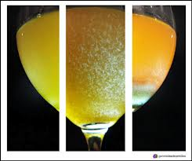
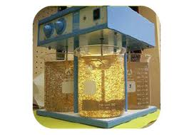
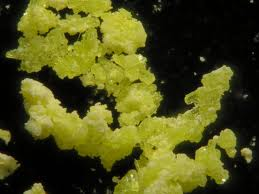
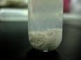
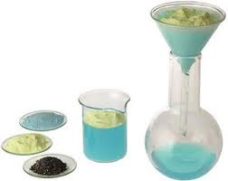
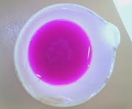

tipos de precipidtos
Precipitados coloidales
formado por partículas muy pequeñas, que no precipitan por efecto de la gravedad, por lo cual, la disolución tiene un aspecto turbio. Estas partículas no pueden separarse del disolvente mediante el papel de filtro, ya que, debido a su pequeño tamaño, atraviesan la trama de éste. Este tipo de precipitado se forma si la sobresaturación es grande, puesto que la velocidad de nucleación también lo es, y se forman muchos núcleos que crecen poco.
 
El tamaño es en el orden de micrómetros (µm)
No sedimentan
No se pueden filtrar usando medios comunes de filtración
{kind=link}
{kind=link}
Precipitado cristalino
las partículas que forman el precipitado son grandes y la disolución queda transparente. Este precipitado se forma si la sobresaturación es pequeña, porque la velocidad también lo es, y se forman pocos núcleos que crecen mucho.
diametro > 0.1 µm. Ejemplo: BaSO4 ( sulfato de bario )
 {kind=link}
{kind=link}
Precipitados gelatinosos
las partículas son pequeñas, menores a los 0,01 micrómetros. Esto sucede cuando las partículas no pueden crecer debido a la gran cantidad de, por ejemplo, agua añadida, lo que genera un aspecto coloide o gelatinoso.
Forman una masa pegajosa de apariencia similar a la mermelada o a la gelatina, forman masas amorfas.
No son deseables por lo difícil de filtrar y atrapa impurezas de difícil eliminación al lavarlos.
diametro < 0,01 µm. Ejemplo: Fe2O3 + nH2O ( poligidrata de óxido de hierro )
 {kind=link}
{kind=link}
Precipitados granulares
las partículas que se forman son pequeñas y de forma irregular y superficie lisa; se pueden filtrar y lavar con facilidad. Las partículas tienden a ser porosas y se asemejan a los sedimentos del café.
Partículas pequeñas de forma irregular y superficie lisa
se filtran y se lavan fácilmente pero sus partículas tienden a ser porosas
se asemejan a los sedimentos de café.
{kind=link}
{kind=link}
Precipitados caseosos
formados por partículas pequeñas, de entre 0.01 y 0.1 micrómetros de diámetro. se forma cuando la reacción de precipitación se produce muy rápidamente, generando muchas partículas que no tienen tiempo de crecer. Estas partículas son muy livianas debido a su pequeño tamaño y quedan suspendidas en la solución formando un coloide estable. Por esta razón, no sedimentan en el fondo de la solución y esta se ve turbia en lugar de transparente.